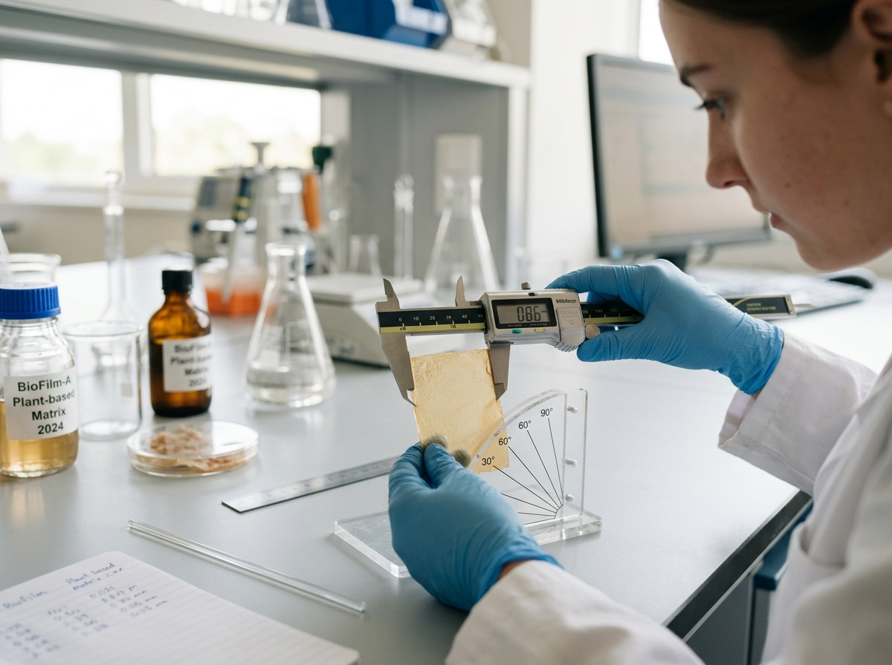

Research and Development of Packaging Materials
SteepWrap focuses on developing and investigating alternative packaging materials with the potential for biodegradation.

Research Focus
The team explores material development, experimentally evaluates selected properties, and studies factors that may influence the characteristics of the resulting samples and their potential applications.
Research Aim
To develop and investigate a material for packaging applications, evaluate its properties through experimental testing, and identify opportunities for further improvement based on collected evidence.
Experimental Approach
The work involves the systematic development of samples, experimental testing, data recording, and comparative analysis. Particular attention is given to experimental reproducibility, measurement quality, and evidence-based conclusions.
Each stage of the research is an opportunity to test assumptions, identify limitations, and determine directions for further investigation.
Scientific Integrity
We aim to ensure that every statement about material properties is supported by actual research findings. Potential advantages are treated as questions to be investigated rather than established facts.
As the research progresses and the necessary reviews are completed, the website will present approved information about the work and its verified findings.
Responsible Development
SteepWrap brings together experimental research, data analysis, and the exploration of promising approaches to packaging materials. Technical implementation details will be disclosed only to the extent considered appropriate following the relevant review.